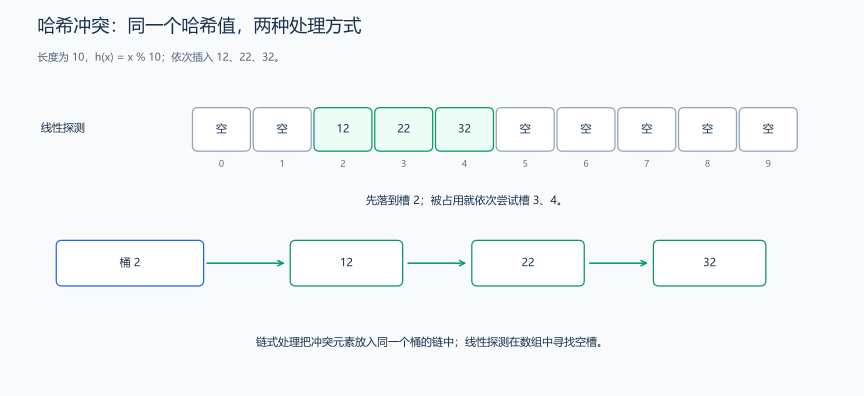
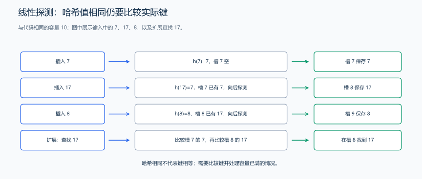
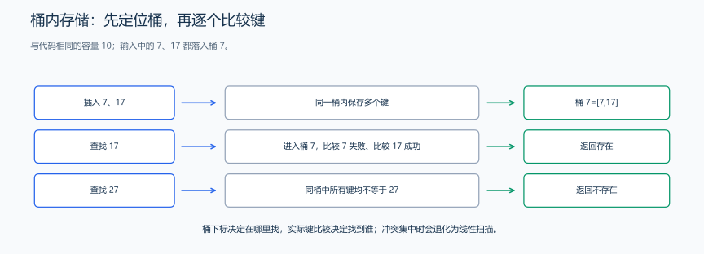

（七） 哈希（散列）表
STL 的 unordered 容器已经能判重和统计。现在用小表手工插入、查找几个键，解释为何先定位桶仍要比较真实键，以及冲突怎样影响工作量。
哈希表（Hash Table）先对键计算哈希值，再把元素分配到桶或槽位中。键分散到各桶时，一次查询通常只比较少量候选，平均时间为 \(O(1)\)；n 个键集中在同一桶时，一次查询可能逐个比较到最后，最坏时间为 \(O(n)\)。unordered_map 与 unordered_set 是标准库提供的无序关联容器。
1. 哈希值、桶下标与冲突
哈希值是对键计算出的结果，桶下标是进一步映射到存储位置的编号，两者不能总是当作同一个数。教学示例直接使用 index=((value%m)+m)%m，把整数分配到 0..m-1；实际代码只在余数为负时加一次 m，避免先加产生溢出。
m=10 时，7 和 17 都映射到桶 7，这叫冲突。键仍然不同，不能因为桶相同就把它们当成同一个元素。查找 17 时，定位到桶 7 后还要比较实际保存的是 7 还是 17。下面介绍两种不同的处理方法。

图以 12、22、32 为例：它们的初始桶下标都为 2。左图寻找后续空槽，右图把元素保存在同一桶内；两幅图代表不同方案。
2. 线性探测：沿后续槽位找空位
题目原文（自拟）： 建立长度为 10 的整数表。输入非负整数 n，再输入 n 个在 int 范围内的整数，按输入顺序插入。起始槽位取非负余数；槽位已占用时循环检查下一槽，直到遇到空位。若插入某个数时整表已满，输出 FULL 并结束；否则按槽位 0..9 输出表，空槽输出 EMPTY，以单个空格分隔。重复数也各占一个槽。
本例的空槽表示： <optional> 提供 C++17 的 optional。optional<int> 可以处于“没有值”或“保存一个 int”两种状态；默认构造没有值，赋入整数后有值。has_value 或逻辑判断检查是否有值，has_value 为真时，*slot 读取所保存的整数；为假时，程序输出 EMPTY。它没有拿 0 或 -1 充当空标记，所以这些整数也可正常存入。
思路分析： 检查下标按 (index+1)%length 循环，确保到末尾后能回到开头。只检查一整圈：若检查了 10 个占用槽还没找到空位，就不能插入。空状态用 optional 表示，因而 0、-1 等数仍可合法保存。

插入遇到冲突后逐槽检查，直到找到空槽。
// optional 的空状态表示空槽；探测最多一整圈，避免表满时死循环。
#include <iostream>
#include <optional>
#include <vector>
using namespace std;
int main() {
constexpr int length = 10;
vector<optional<int>> table(length);
int n;
cin >> n;
for (int i = 0; i < n; ++i) {
int value;
cin >> value;
int index = value % length;
if (index < 0)
index += length;
int checked = 0;
while (checked < length && table[index].has_value()) {
index = (index + 1) % length;
++checked;
}
if (checked == length) {
cout << "FULL\n";
return 0;
}
table[index] = value;
}
for (int i = 0; i < length; ++i) {
if (i != 0)
cout << ' ';
if (table[i])
cout << *table[i];
else
cout << "EMPTY";
}
cout << '\n';
}样例输入：
7
0 1 2 7 17 8 6样例输出：
0 1 2 EMPTY EMPTY EMPTY 6 7 17 8代码解释： 17 从槽 7 探测到槽 8；随后 8 从槽 8 探测到槽 9。6 的初始槽为空，所以放入槽 6。checked 记录已经检查几项，绕过十槽还未找到空位时，程序输出 FULL。查找 17 时也从槽 7 开始，跳过 7 后在槽 8 找到它。删除槽 7 中的数时，可以留下“已删除”标记，让查找继续到槽 8；若直接变成空槽，查找就在 7 停下，遗漏后面的 17。
推广到 m 个槽时，一次探测最坏检查 m 项，额外存储为 \(O(m)\)。表中空槽较多、起始位置较分散时，探测往往很快遇到空位；连续占满一段槽位后，查找和插入都会沿这段位置继续扫描。固定十槽的程序可以直接观察这两种过程。
3. 桶内存储：在同一桶中逐个比较
链地址法让一个桶保存所有落入该桶的元素，常用链表连接它们。下面用 vector<vector<int>> 表示桶与桶内元素：外层下标是桶号，内层 vector 是这个桶里的列表，便于观察冲突后怎样保存和查找。
题目原文（自拟）： 输入非负整数 n、n 个整数，再输入查询值 target，所有值在 int 范围内。把数据按非负的模 10 余数放入相应桶。先输出 target 是否存在，存在输出 1，否则输出 0；再依次输出十个桶，每行格式为 编号: 后跟该桶按插入顺序保存的数。重复输入不去重。
思路分析： 先找到 target 应在的桶，再检查桶内是否有相等的数。例如桶 7 中有 7、17，查找 17 时先比较 7，再比较 17；其他桶不用访问。

桶下标相同的键仍需逐个比较。
#include <iostream>
#include <vector>
using namespace std;
const int len = 10;
int main() {
// 每个桶用 vector 保存冲突元素，模拟桶式存储；它并不是链表
vector<vector<int>> hash(len);
int n;
cin >> n;
for (int i = 0; i < n; ++i) {
int val;
cin >> val;
int key = val % len;
if (key < 0)
key += len;
hash[key].push_back(val);
}
// 查找操作示例
int target;
cin >> target;
bool flag = 0;
int index = target % len;
if (index < 0)
index += len;
const auto &h = hash[index];
for (int i = 0; i < h.size(); ++i)
if (h[i] == target)
flag = 1;
cout << flag << endl;
// 输出结构
for (int i = 0; i < len; ++i) {
cout << i << ": ";
for (auto v : hash[i])
cout << v << " ";
cout << endl;
}
}样例输入：
7
0 1 2 7 17 8 6
17样例输出：
1
0: 0
1: 1
2: 2
3:
4:
5:
6: 6
7: 7 17
8: 8
9:代码解释： 查询 17 时只检查桶 7，其中先遇到 7，再遇到 17，最后输出 1。展示用的桶输出包含行末空格，不影响图示内容；解题输出仍要遵守题面格式。若有 m 个桶、n 个元素且分布均匀，平均桶长约为 n/m，查找期望代价为 \(O(1+n/m)\)；最坏所有元素集中在一桶，查找为 \(O(n)\)。这个程序还要输出全部桶，所以整段演示的时间为 \(O(n+m)\)，空间为 \(O(n+m)\)，不能把“单次平均查找”直接当成整个程序的复杂度。
4. 装载因子、rehash 与哈希设计
装载因子为 \(\alpha=n/m\)，这里 n 是元素数，m 是槽位数或桶数。开放地址法越接近满表，探测越可能变长；链式桶即使 alpha>1 也能存储，但平均桶长会增加。0.7 可以作为某些线性探测实现的经验阈值，不能称为所有哈希表的统一要求。
rehash 改变桶数，并按新的桶数重新安排元素；它改变的是组织方式，冲突仍由桶内存储或探测过程处理。标准无序容器还可用 reserve 规划预计元素数、用 max_load_factor 设置负载上限，从而减少增长时的重建。
| 方案 | 存储方式 | 需要关注 |
|---|---|---|
| 开放地址 | 元素存于同一槽位数组，冲突时继续探测 | 满表、聚集、删除标记 |
| 桶内存储 | 同一桶内保存多个元素 | 桶长、相等比较、附加存储 |
| rehash 操作 | 改变桶组织并重新分配元素 | 重建成本、遍历迭代器失效 |
标准无序容器以桶组织元素，冲突时仍在候选桶中比较键；各实现可以选择不同的桶内存储方式。rehash 会使迭代器失效，但不会仅因重分配桶而使元素指针与引用失效。相等的键经同一个哈希函数计算得到相同位置，查找因此能回到插入时的桶；不同键也可能落在同一桶，如 7 与 17，这时靠键比较区分。参见 C++ 标准草案：无序关联容器要求。
哈希函数应兼顾计算成本与分布。整数可以用适当的混合函数；字符串可逐字节进行多项式乘加；自定义结构需要结合参与相等比较的字段。字符串哈希中的 31、131 等基数是常用选择之一，不同字符串仍可能得到相同哈希值，因此找到哈希相同的候选后，还要核对实际字符串。精确判重时可直接用保存原字符串的 set 或 unordered_set；后者仍会比较完整键。
练习题： 洛谷 P3370 — 字符串哈希（可先用 set / unordered_set 精确判重）、CF 4C — Registration System。